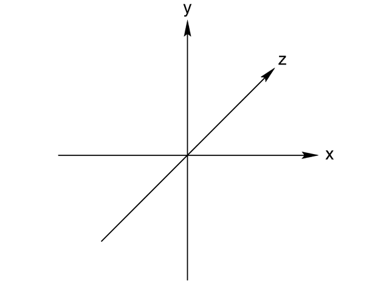
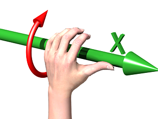
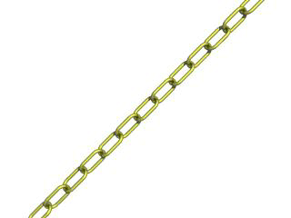

| POV-Ray for Unix version 3.8 | ||||
|
|
||||
| Home | POV-Ray for Unix | POV-Ray Tutorial | POV-Ray Reference | |
The beginning tutorial explains step by step how to use POV-Ray's scene description language to create your own scenes. The use of almost every feature of POV-Ray's language is explained in detail. We will learn basic things like placing cameras and light sources. We will also learn how to create a large variety of objects and how to assign different textures to them. The more sophisticated features like radiosity, interior, media and atmospheric effects will be explained in detail.
We will create the scene file for a simple picture. Since ray-tracers thrive on spheres, that is what we will render first.
First, we have to tell POV-Ray where our camera is and where it is looking. To do this, we use 3D coordinates. The usual coordinate system for POV-Ray has the positive y-axis pointing up, the positive x-axis pointing to the right, and the positive z-axis pointing into the screen as follows:
|
This kind of coordinate system is called a left-handed coordinate system. If we use our left hand's fingers we can easily see why it is called left-handed. We just point our thumb in the direction of the positive x-axis (to the right), the index finger in the direction of the positive y-axis (straight up) and the middle finger in the positive z-axis direction (forward). We can only do this with our left hand. If we had used our right hand we would not have been able to point the middle finger in the correct direction. |
 |
|
The left-handed coordinate system |
|  |
The left hand can also be used to determine rotation directions. To do this we must perform the famous Computer Graphics Aerobics exercise. We hold up our left hand and point our thumb in the positive direction of the axis of rotation. Our fingers will curl in the positive direction of rotation. Similarly if we point our thumb in the negative direction of the axis our fingers will curl in the negative direction of rotation. In this illustration, the left hand is curling around the x-axis. The thumb points in the positive x direction and the fingers curl over in the positive rotation direction. |
|
Computer Graphics Aerobics |
When a right-handed system is used, as some CAD systems and modelers do, the right vector in the camera specification will need to be changed, additionally be sure to use the right hand for the Aerobics exercise. This pertains to both the coordinate system and rotations. See the detailed description in handedness for more information.
There is some controversy over whether POV-Ray's method of doing a right-handed system is really proper. To avoid problems we stick with the left-handed system which is not in dispute.
Using our personal favorite text editor, we create a file called demo.pov.
Some versions of POV-Ray come with their own built-in text editor which may be easier
to use. We then type in the following text. The input is case sensitive, so we have to be
sure to get capital and lowercase letters correct.
#include "colors.inc" // The include files contain #include "stones.inc" // pre-defined scene elements
The first include statement reads in definitions for various useful colors. The second include statement reads in a collection of stone textures. POV-Ray comes with many standard include files. Others of interest are:
#include "textures.inc" // pre-defined scene elements #include "shapes.inc" #include "glass.inc" #include "metals.inc" #include "woods.inc"
They read pre-defined textures, shapes, glass, metal, and wood textures. It is a good idea to have a look through them to see a few of the many possible shapes and textures available.
We should only include files we really need in our scene. Some of the
include files coming with POV-Ray are quite large and we should better save
the parsing time and memory if we do not need them. In the following
examples we will only use the colors.inc, and stones.inc
include files.
We may have as many include files as needed in a scene file. Include files may themselves contain include files, but we are limited to declaring includes nested only ten levels deep.
Filenames specified in the include statements will be searched for in the current directory first. If it fails to find your .Inc files in the current directory, POV-Ray searches any library paths that you have specified. Library paths are options set by the +L command-line switch or Library_Path option. See the chapter Setting POV-Ray Options for more information on library paths.
Because it is more useful to keep include files in a separate directory, standard installations of POV-Ray place these files in the c:\povray3\include directory (replace c:\povray3 with the actual directory that you installed POV-Ray in). If you get an error message saying that POV-Ray cannot open colors.inc or other include files, make sure that you specify the library path properly.
The camera statement describes where and how the camera sees
the scene. It gives x-, y- and z-coordinates to indicate the position of the
camera and what part of the scene it is pointing at. We describe the
coordinates using a three-part vector. A vector is specified by
putting three numeric values between a pair of angle brackets and separating
the values with commas. We add the following camera statement to the
scene.
camera {
location <0, 2, -3>
look_at <0, 1, 2>
}
Briefly, location <0,2,-3> places the camera up two
units and back three units from the center of the ray-tracing universe which
is at <0,0,0>. By default +z is into the screen and -z is back out of
the screen.
Also look_at <0,1,2> rotates the camera to point at the
coordinates <0,1,2>. A point 1 unit up from the origin and 2 units away
from the origin. This makes it 5 units in front of and 1 unit lower than the
camera. The look_at point should be the center of attention of
our image.
Now that the camera is set up to record the scene, let's place a yellow sphere into the scene. We add the following to our scene file:
sphere {
<0, 1, 2>, 2
texture {
pigment { color Yellow }
}
}
The first vector specifies the center of the sphere. In this example the x coordinate is zero so it is centered left and right. It is also at y=1 or one unit up from the origin. The z coordinate is 2 which is five units in front of the camera, which is at z=-3. After the center vector is a comma followed by the radius which in this case is two units. Since the radius is half the width of a sphere, the sphere is four units wide.
After we have defined the location and size of the sphere, we need to
describe the appearance of the surface. The texture statement
specifies these parameters. Texture blocks describe the color, bumpiness and
finish properties of an object. In this example we will specify the color
only. This is the minimum we must do. All other texture options except color
will use default values.
The color we define is the way we want an object to look if fully
illuminated. If we were painting a picture of a sphere we would use dark
shades of a color to indicate the shadowed side and bright shades on the
illuminated side. However ray-tracing takes care of that for you. We only
need to pick the basic color inherent in the object and POV-Ray brightens or
darkens it depending on the lighting in the scene. Because we are defining
the basic color the object actually has rather than how it
looks the parameter is called pigment.
Many types of color patterns are available for use in a pigment statement.
The keyword color specifies that the whole object is to be one
solid color rather than some pattern of colors. We can use one of the color
identifiers previously defined in the standard include file
colors.inc.
If no standard color is available for our needs, we may define our own color by using the color keyword followed by red, green and blue keywords specifying the amount of red, green and blue to be mixed. For example a nice shade of pink can be specified by:
color red 1.0 green 0.8 blue 0.8
Note: The international, rather than American, form "colour" is also acceptable and may be used anywhere that "color" may be used.
The values after each keyword should be in the range from 0.0 to 1.0. Any of the three components not specified will default to 0. A shortcut notation may also be used. The following produces the same shade of pink:
color rgb <1.0, 0.8, 0.8>
In many cases the color keyword is superfluous, so the shortest way to
specify the pink color is:
rgb <1.0, 0.8, 0.8>
Colors are explained in more detail in section Color Expressions.
One more detail is needed for our scene. We need a light source. Until we create one, there is no light in this virtual world. Thus we add the line
light_source { <2, 4, -3> color White}
to the scene file to get our first complete POV-Ray scene file as shown below.
#include "colors.inc"
background { color Cyan }
camera {
location <0, 2, -3>
look_at <0, 1, 2>
}
sphere {
<0, 1, 2>, 2
texture {
pigment { color Yellow }
}
}
light_source { <2, 4, -3> color White}
The vector in the light_source statement specifies the
location of the light as two units to our right, four units above the origin
and three units back from the origin. The light source is an invisible tiny
point that emits light. It has no physical shape, so no texture is
needed.
That's it! We close the file and render a small picture of it using whatever methods you used for your particular platform. If you specified a preview display it will appear on your screen. If you specified an output file (the default is file output on), then POV-Ray also created a file.
Note: If you do not have high color or true color display hardware then the preview image may look poor but the full detail is written to the image file regardless of the type of display.
The scene we just traced is not quite state of the art but we will have to start with the basics before we soon get to much more fascinating features and scenes.
So far we have just used the sphere shape. There are many other types of shapes that can be rendered by POV-Ray. The following sections will describe how to use some of the more simple objects as a replacement for the sphere used above.
The box is one of the most common objects used. We try this
example in place of the sphere:
box {
<-1, 0, -1>, // Near lower left corner
< 1, 0.5, 3> // Far upper right corner
texture {
T_Stone25 // Pre-defined from stones.inc
scale 4 // Scale by the same amount in all
// directions
}
rotate y*20 // Equivalent to "rotate <0,20,0>"
}
In the example we can see that a box is defined by specifying the 3D coordinates of its opposite corners. The first vector is generally the minimum x-, y- and z-coordinates and the 2nd vector should be the maximum x-, y- and z-values however any two opposite corners may be used. Box objects can only be defined parallel to the axes of the world coordinate system. We can later rotate them to any angle.
Note: We can perform simple math on
values and vectors. In the rotate parameter we multiplied the vector
identifier y by 20. This is the same as <0,1,0>*20 or
<0,20,0>.
Here is another example showing how to use a cone:
cone {
<0, 1, 0>, 0.3 // Center and radius of one end
<1, 2, 3>, 1.0 // Center and radius of other end
texture { T_Stone25 scale 4 }
}
The cone shape is defined by the center and radius of each end. In this
example one end is at location <0,1,0> and has a radius of 0.3 while
the other end is centered at <1,2,3> with a radius of 1. If we want the
cone to come to a sharp point we must use radius=0. The solid end caps are
parallel to each other and perpendicular to the cone axis. If we want an open
cone with no end caps we have to add the keyword open after the
2nd radius like this:
cone {
<0, 1, 0>, 0.3 // Center and radius of one end
<1, 2, 3>, 1.0 // Center and radius of other end
open // Removes end caps
texture { T_Stone25 scale 4 }
}
We may also define a cylinder like this:
cylinder {
<0, 1, 0>, // Center of one end
<1, 2, 3>, // Center of other end
0.5 // Radius
open // Remove end caps
texture { T_Stone25 scale 4 }
}
Let's try out a computer graphics standard The Checkered
Floor. We add the following object to the first version of the
demo.pov file, the one including the sphere.
plane { <0, 1, 0>, -1
pigment {
checker color Red, color Blue
}
}
The object defined here is an infinite plane. The vector <0,1,0> is the surface normal of the plane (i.e. if we were standing on the surface, the normal points straight up). The number afterward is the distance that the plane is displaced along the normal from the origin -- in this case, the floor is placed at y=-1 so that the sphere at y=1, radius=2, is resting on it.
Note: Even though there is no texture statement there is
an implied texture here. We might find that continually typing statements
that are nested like texture {pigment} can get to be tiresome so
POV-Ray let's us leave out the texture statement under many
circumstances. In general we only need the texture block surrounding a
texture identifier (like the T_Stone25 example above), or when
creating layered textures (which are covered later).
This pigment uses the checker color pattern and specifies that the two colors red and blue should be used.
Because the vectors <1,0,0>, <0,1,0> and <0,0,1> are used
frequently, POV-Ray has three built-in vector identifiers x,
y and z respectively that can be used as a
shorthand. Thus the plane could be defined as:
plane { y, -1
pigment { ... }
}
Note: We do not use angle brackets around vector identifiers.
Looking at the floor, we notice that the ball casts a shadow on the floor. Shadows are calculated very accurately by the ray-tracer, which creates precise, sharp shadows. In the real world, penumbral or soft shadows are often seen. Later we will learn how to use extended light sources to soften the shadows.
A torus can be thought of as a donut or an inner-tube. It is
a shape that is vastly useful in many kinds of CSG so POV-Ray has adopted
this 4th order quartic polynomial as a primitive shape. The syntax for a
torus is so simple that it makes it a very easy shape to work with once we
learn what the two float values mean. Instead of a lecture on the subject,
let's create one and do some experiments with it.
We create a file called tordemo.pov and edit it as follows:
#include "colors.inc"
camera {
location <0, .1, -25>
look_at 0
angle 30
}
background { color Gray50 } // to make the torus easy to see
light_source { <300, 300, -1000> White }
torus {
4, 1 // major and minor radius
rotate -90*x // so we can see it from the top
pigment { Green }
}
We trace the scene. Well, it is a donut alright. Let's try changing the major and minor radius values and see what happens. We change them as follows:
torus { 5, .25 // major and minor radius
That looks more like a hula-hoop! Let's try this:
torus { 3.5, 2.5 // major and minor radius
Whoa! A donut with a serious weight problem!
With such a simple syntax, there is not much else we can do to a torus besides change its texture... or is there? Let's see...
Tori are very useful objects in CSG. Let's try a little experiment. We make a difference of a torus and a box:
difference {
torus {
4, 1
rotate x*-90 // so we can see it from the top
}
box { <-5, -5, -1>, <5, 0, 1> }
pigment { Green }
}
Interesting... a half-torus. Now we add another one flipped the other way. Only, let's declare the original half-torus and the necessary transformations so we can use them again:
#declare Half_Torus = difference {
torus {
4, 1
rotate -90*x // so we can see it from the top
}
box { <-5, -5, -1>, <5, 0, 1> }
pigment { Green }
}
#declare Flip_It_Over = 180*x;
#declare Torus_Translate = 8; // twice the major radius
Now we create a union of two Half_Torus objects:
union {
object { Half_Torus }
object { Half_Torus
rotate Flip_It_Over
translate Torus_Translate*x
}
}
This makes an S-shaped object, but we cannot see the whole thing from our present camera. Let's add a few more links, three in each direction, move the object along the +z-direction and rotate it about the +y-axis so we can see more of it. We also notice that there appears to be a small gap where the half Tori meet. This is due to the fact that we are viewing this scene from directly on the x-z-plane. We will change the camera's y-coordinate from 0 to 0.1 to eliminate this.
union {
object { Half_Torus }
object { Half_Torus
rotate Flip_It_Over
translate x*Torus_Translate
}
object { Half_Torus
translate x*Torus_Translate*2
}
object { Half_Torus
rotate Flip_It_Over
translate x*Torus_Translate*3
}
object { Half_Torus
rotate Flip_It_Over
translate -x*Torus_Translate
}
object { Half_Torus
translate -x*Torus_Translate*2
}
object { Half_Torus
rotate Flip_It_Over
translate -x*Torus_Translate*3
}
object { Half_Torus
translate -x*Torus_Translate*4
}
rotate y*45
translate z*20
}
Rendering this we see a cool, undulating, snake-like something-or-other. Neato. But we want to model something useful, something that we might see in real life. How about a chain?
Thinking about it for a moment, we realize that a single link of a chain can
be easily modeled using two half tori and two cylinders. We create a new
file. We can use the same camera, background, light source and declared
objects and transformations as we used in tordemo.pov:
#include "colors.inc"
camera {
location <0, .1, -25>
look_at 0
angle 30
}
background { color Gray50 }
light_source{ <300, 300, -1000> White }
#declare Half_Torus = difference {
torus {
4,1
sturm
rotate x*-90 // so we can see it from the top
}
box { <-5, -5, -1>, <5, 0, 1> }
pigment { Green }
}
#declare Flip_It_Over = x*180;
#declare Torus_Translate = 8;
Now, we make a complete torus of two half tori:
union {
object { Half_Torus }
object { Half_Torus rotate Flip_It_Over }
}
This may seem like a wasteful way to make a complete torus, but we are really going to move each half apart to make room for the cylinders. First, we add the declared cylinder before the union:
#declare Chain_Segment = cylinder {
<0, 4, 0>, <0, -4, 0>, 1
pigment { Green }
}
We then add two Chain_Segments to the union and translate
them so that they line up with the minor radius of the torus on each
side:
union {
object { Half_Torus }
object { Half_Torus rotate Flip_It_Over }
object { Chain_Segment translate x*Torus_Translate/2 }
object { Chain_Segment translate -x*Torus_Translate/2 }
}
Now we translate the two half tori +y and -y so that the clipped ends meet
the ends of the cylinders. This distance is equal to half of the previously
declared Torus_Translate:
union {
object {
Half_Torus
translate y*Torus_Translate/2
}
object {
Half_Torus
rotate Flip_It_Over
translate -y*Torus_Translate/2
}
object {
Chain_Segment
translate x*Torus_Translate/2
}
object {
Chain_Segment
translate -x*Torus_Translate/2
}
}
We render this and voila! A single link of a chain. But we are not done yet! Whoever heard of a green chain? We would rather use a nice metallic color instead. First, we remove any pigment blocks in the declared tori and cylinders. Then we add a declaration for a golden texture just before the union that creates the link. Finally, we add the texture to the union and declare it as a single link:
#declare Half_Torus = difference {
torus {
4,1
sturm
rotate x*-90 // so we can see it from the top
}
box { <-5, -5, -1>, <5, 0, 1> }
}
#declare Chain_Segment = cylinder {
<0, 4, 0>, <0, -4, 0>, 1
}
#declare Chain_Gold = texture {
pigment { BrightGold }
finish {
ambient .1
diffuse .4
reflection .25
specular 1
metallic
}
}
#declare Link = union {
object {
Half_Torus
translate y*Torus_Translate/2
}
object {
Half_Torus
rotate Flip_It_Over
translate -y*Torus_Translate/2
}
object {
Chain_Segment
translate x*Torus_Translate/2
}
object {
Chain_Segment
translate -x*Torus_Translate/2
} texture { Chain_Gold }
}
Now we make a union of two links. The second one will have to be
translated +y so that its inner wall just meets the inner wall of the other
link, just like the links of a chain. This distance turns out to be double
the previously declared Torus_Translate minus 2 (twice the minor
radius). This can be described by the expression:
Torus_Translate*2-2*y
We declare this expression as follows:
#declare Link_Translate = Torus_Translate*2-2*y;
In the object block, we will use this declared value so that we can
multiply it to create other links. Now, we rotate the second link
90*y so that it is perpendicular to the first, just like links of a
chain. Finally, we scale the union by 1/4 so that we can see the whole
thing:
union {
object { Link }
object { Link translate y*Link_Translate rotate y*90 }
scale .25
}
We render this and we will see a very realistic pair of links. If we want to make an entire chain, we must declare the above union and then create another union of this declared object. We must be sure to remove the scaling from the declared object:
#declare Link_Pair =
union {
object { Link }
object { Link translate y*Link_Translate rotate y*90 }
}
Now we declare our chain:
#declare Chain = union {
object { Link_Pair}
object { Link_Pair translate y*Link_Translate*2 }
object { Link_Pair translate y*Link_Translate*4 }
object { Link_Pair translate y*Link_Translate*6 }
object { Link_Pair translate -y*Link_Translate*2 }
object { Link_Pair translate -y*Link_Translate*4 }
object { Link_Pair translate -y*Link_Translate*6 }
}
|
And finally we create our chain with a couple of transformations to make it easier to see. These include scaling it down by a factor of 1/10, and rotating it so that we can clearly see each link:
object { Chain scale .1 rotate <0, 45, -45> }
We render this and we should see a very realistic gold chain stretched diagonally across the screen. |
 |
|
The torus object can be used to create chains. |
Constructive Solid Geometry, or CSG, is a powerful tool to combine primitive objects to create more complex objects as shown in the following sections.
CSG stands for Constructive Solid Geometry. POV-Ray allows us to construct complex solids by combining primitive shapes in four different ways. In the union statement, two or more shapes are added together. With the intersection statement, two or more shapes are combined to make a new shape that consists of the area common to both shapes. The difference statement, an initial shape has all subsequent shapes subtracted from it.
And last but not least merge, which is like a union where the surfaces inside the union are removed (useful in transparent CSG objects). We will deal with each of these in detail in the next few sections.
CSG objects can be extremely complex. They can be deeply nested. In other words there can be unions of differences or intersections of merges or differences of intersections or even unions of intersections of differences of merges... ad infinitum. CSG objects are (almost always) finite objects and thus respond to auto-bounding and can be transformed like any other POV primitive shape.
Let's try making a simple union. Create a file called
csgdemo.pov and edit it as follows:
#include "colors.inc"
camera {
location <0, 1, -10>
look_at 0
angle 36
}
light_source { <500, 500, -1000> White }
plane { y, -1.5
pigment { checker Green White }
}
Let's add two spheres each translated 0.5 units along the x-axis in each direction. We color one blue and the other red.
sphere { <0, 0, 0>, 1
pigment { Blue }
translate -0.5*x
}
sphere { <0, 0, 0>, 1
pigment { Red }
translate 0.5*x
}
We trace this file and note the results. Now we place a union block around the two spheres. This will create a single CSG union out of the two objects.
union{
sphere { <0, 0, 0>, 1
pigment { Blue }
translate -0.5*x
}
sphere { <0, 0, 0>, 1
pigment { Red }
translate 0.5*x
}
}
We trace the file again. The union will appear no different from what each sphere looked like on its own, but now we can give the entire union a single texture and transform it as a whole. Let's do that now.
union{
sphere { <0, 0, 0>, 1
translate -0.5*x
}
sphere { <0, 0, 0>, 1
translate 0.5*x
}
pigment { Red }
scale <1, .25, 1>
rotate <30, 0, 45>
}
We trace the file again. As we can see, the object has changed dramatically. We experiment with different values of scale and rotate and try some different textures.
There are many advantages of assigning only one texture to a CSG object instead of assigning the texture to each individual component. First, it is much easier to use one texture if our CSG object has a lot of components because changing the objects appearance involves changing only one single texture. Second, the file parses faster because the texture has to be parsed only once. This may be a great factor when doing large scenes or animations. Third, using only one texture saves memory because the texture is only stored once and referenced by all components of the CSG object. Assigning the texture to all n components means that it is stored n times.
Now let's use these same spheres to illustrate the intersection CSG
object. We change the word union to intersection and
delete the scale and rotate statements:
intersection {
sphere { <0, 0, 0>, 1
translate -0.5*x
}
sphere { <0, 0, 0>, 1
translate 0.5*x
}
pigment { Red }
}
We trace the file and will see a lens-shaped object instead of the two spheres. This is because an intersection consists of the area shared by both shapes, in this case the lens-shaped area where the two spheres overlap. We like this lens-shaped object so we will use it to demonstrate differences.
We rotate the lens-shaped intersection about the y-axis so that the broad side is facing the camera.
intersection{
sphere { <0, 0, 0>, 1
translate -0.5*x
}
sphere { <0, 0, 0>, 1
translate 0.5*x
}
pigment { Red }
rotate 90*y
}
Let's create a cylinder and stick it right in the middle of the lens.
cylinder { <0, 0, -1> <0, 0, 1>, .35
pigment { Blue }
}
We render the scene to see the position of the cylinder. We will place a
difference block around both the lens-shaped intersection and
the cylinder like this:
difference {
intersection {
sphere { <0, 0, 0>, 1
translate -0.5*x
}
sphere { <0, 0, 0>, 1
translate 0.5*x
}
pigment { Red }
rotate 90*y
}
cylinder { <0, 0, -1> <0, 0, 1>, .35
pigment { Blue }
}
}
We render the file again and see the lens-shaped intersection with a neat
hole in the middle of it where the cylinder was. The cylinder has been subtracted
from the intersection. Note that the pigment of the cylinder causes the surface of the hole to
be colored blue. If we eliminate this pigment the surface of the hole will be black, as this is the default color if no color is specified.
OK, let's get a little wilder now. Let's declare our perforated lens object to give it a name. Let's also eliminate all textures in the declared object because we will want them to be in the final union instead.
#declare Lens_With_Hole = difference {
intersection {
sphere { <0, 0, 0>, 1
translate -0.5*x
}
sphere { <0, 0, 0>, 1
translate 0.5*x
}
rotate 90*y
}
cylinder { <0, 0, -1> <0, 0, 1>, .35 }
}
Let's use a union to build a complex shape composed of copies of this object.
union {
object { Lens_With_Hole translate <-.65, .65, 0> }
object { Lens_With_Hole translate <.65, .65, 0> }
object { Lens_With_Hole translate <-.65, -.65, 0> }
object { Lens_With_Hole translate <.65, -.65, 0> }
pigment { Red }
}
We render the scene. An interesting object to be sure. But let's try something more. Let's make it a partially-transparent object by adding some filter to the pigment block.
union {
object { Lens_With_Hole translate <-.65, .65, 0> }
object { Lens_With_Hole translate <.65, .65, 0> }
object { Lens_With_Hole translate <-.65, -.65, 0> }
object { Lens_With_Hole translate <.65, -.65, 0> }
pigment { Red filter .5 }
}
We render the file again. This looks pretty good... only... we can see parts of each of the lens objects inside the union! This is not good.
This brings us to the fourth kind of CSG object, the merge.
Merges are the same as unions, but the geometry of the objects in the CSG
that is inside the merge is not traced. This should eliminate the problem
with our object. Let's try it.
merge {
object { Lens_With_Hole translate <-.65, .65, 0> }
object { Lens_With_Hole translate <.65, .65, 0> }
object { Lens_With_Hole translate <-.65, -.65, 0> }
object { Lens_With_Hole translate <.65, -.65, 0> }
pigment { Red filter .5 }
}
Sure enough, it does!
There is a severe pitfall in the CSG code that we have to be aware of.
POV-Ray uses inside/outside tests to determine the points at which a ray intersects a CSG object. A problem arises when the surfaces of two different shapes coincide because there is no way (due to the computer's floating-point accuracy) to tell whether a point on the coincident surface belongs to one shape or the other.
Look at the following example where a cylinder is used to cut a hole in a larger box.
difference {
box { -1, 1 pigment { Red } }
cylinder { -z, z, 0.5 pigment { Green } }
}
Note: The vectors -1 and 1 in the box definition expand to <-1,-1,-1> and <1,1,1> respectively.
If we trace this object we see red speckles where the hole is supposed to be. This is caused by the coincident surfaces of the cylinder and the box. One time the cylinder's surface is hit first by a viewing ray, resulting in the correct rendering of the hole, and another time the box is hit first, leading to a wrong result where the hole vanishes and red speckles appear. This problem can be avoided by increasing the size of the cylinder to get rid of the coincidence surfaces. This is done by:
difference {
box { -1, 1 pigment { Red } }
cylinder { -1.001*z, 1.001*z, 0.5 pigment { Green } }
}
In general we have to make the subtracted object a little bit larger in a CSG difference. We just have to look for coincident surfaces and increase the subtracted object appropriately to get rid of those surfaces.
The same problem occurs in CSG intersections and is also avoided by scaling some of the involved objects.
In any ray-traced scene, the light needed to illuminate our objects and their surfaces must come from a light source. There are many kinds of light sources available in POV-Ray and careful use of the correct kind can yield very impressive results. Let's take a moment to explore some of the different kinds of light sources and their various parameters.
Pointlights are exactly what the name indicates. A pointlight has no size, is invisible and illuminates everything in the scene equally no matter how far away from the light source it may be (this behavior can be changed). This is the simplest and most basic light source. There are only two important parameters, location and color. Let's design a simple scene and place a pointlight source in it.
We create a new file and name it litedemo.pov. We edit it as
follows:
#include "colors.inc"
#include "textures.inc"
camera {
location <-4, 3, -9>
look_at <0, 0, 0>
angle 48
}
We add the following simple objects:
plane {
y, -1
texture {
pigment {
checker
color rgb<0.5, 0, 0>
color rgb<0, 0.5, 0.5>
}
finish {
diffuse 0.4
ambient 0.2
phong 1
phong_size 100
reflection 0.25
}
}
}
torus {
1.5, 0.5
texture { Brown_Agate }
rotate <90, 160, 0>
translate <-1, 1, 3>
}
box {
<-1, -1, -1>, <1, 1, 1>
texture { DMFLightOak }
translate <2, 0, 2.3>
}
cone {
<0,1,0>, 0, <0,0,0>, 1
texture { PinkAlabaster }
scale <1, 3, 1>
translate <-2, -1, -1>
}
sphere {
<0,0,0>,1
texture { Sapphire_Agate }
translate <1.5, 0, -2>
}
Now we add a pointlight:
light_source {
<2, 10, -3>
color White
}
We render this and see that the objects are clearly visible with sharp shadows. The sides of curved objects nearest the light source are brightest in color with the areas that are facing away from the light source being darkest. We also note that the checkered plane is illuminated evenly all the way to the horizon. This allows us to see the plane, but it is not very realistic.
Spotlights are a very useful type of light source. They can be used to add
highlights and illuminate features much as a photographer uses spots to do
the same thing. To create a spotlight simply add the spotlight
keyword to a regular point light. There are a few more parameters with
spotlights than with pointlights. These are radius,
falloff, falloff and point_at. The radius parameter is the angle of the fully illuminated cone. The falloff parameter is the angle of the umbra cone where the light falls off to darkness. The tightness is a parameter that determines the rate of the light falloff. The point_at parameter is just what it says, the location where the spotlight is pointing to. Let's change the light in our scene as follows:
light_source {
<0, 10, -3>
color White
spotlight
radius 15
falloff 20
tightness 10
point_at <0, 0, 0>
}
We render this and see that only the objects are illuminated. The rest of the plane and the outer portions of the objects are now unlit. There is a broad falloff area but the shadows are still razor sharp. Let's try fiddling with some of these parameters to see what they do. We change the falloff value to 16 (it must always be larger than the radius value) and render again. Now the falloff is very narrow and the objects are either brightly lit or in total darkness. Now we change falloff back to 20 and change the tightness value to 100 (higher is tighter) and render again. The spotlight appears to have gotten much smaller but what has really happened is that the falloff has become so steep that the radius actually appears smaller.
We decide that a tightness value of 10 (the default) and a falloff value of 18 are best for this spotlight and we now want to put a few spots around the scene for effect. Let's place a slightly narrower blue and a red one in addition to the white one we already have:
light_source {
<10, 10, -1>
color Red
spotlight
radius 12
falloff 14
tightness 10
point_at <2, 0, 0>
}
light_source {
<-12, 10, -1>
color Blue
spotlight
radius 12
falloff 14
tightness 10
point_at <-2, 0, 0>
}
Rendering this we see that the scene now has a wonderfully mysterious air to it. The three spotlights all converge on the objects making them blue on one side and red on the other with enough white in the middle to provide a balance.
Spotlights are cone shaped, meaning that their effect will change with
distance. The farther away from the spotlight an object is, the larger the
apparent radius will be. But we may want the radius and falloff to be a
particular size no matter how far away the spotlight is. For this reason,
cylindrical light sources are needed. A cylindrical light source is just like
a spotlight, except that the radius and falloff regions are the same no
matter how far from the light source our object is. The shape is therefore a
cylinder rather than a cone. We can specify a cylindrical light source by
replacing the spotlight keyword with the cylinder
keyword. We try this now with our scene by replacing all three spotlights
with cylinder lights and rendering again. We see that the scene is much
dimmer. This is because the cylindrical constraints do not let the light
spread out like in a spotlight. Larger radius and falloff values are needed
to do the job. We try a radius of 20 and a falloff of 30 for all three
lights. That's the ticket!
So far all of our light sources have one thing in common. They produce sharp shadows. This is because the actual light source is a point that is infinitely small. Objects are either in direct sight of the light, in which case they are fully illuminated, or they are not, in which case they are fully shaded. In real life, this kind of stark light and shadow situation exists only in outer space where the direct light of the sun pierces the total blackness of space. But here on Earth, light bends around objects, bounces off objects, and usually the source has some dimension, meaning that it can be partially hidden from sight (shadows are not sharp anymore). They have what is known as an umbra, or an area of fuzziness where there is neither total light or shade. In order to simulate these soft shadows, a ray-tracer must give its light sources dimension. POV-Ray accomplishes this with a feature known as an area light.
Area lights have dimension in two axis'. These are specified by the
first two vectors in the area light syntax. We must also specify how many
lights are to be in the array. More will give us cleaner soft shadows but
will take longer to render. Usually a 3*3 or a 5*5 array will suffice. We
also have the option of specifying an adaptive value. The
adaptive keyword tells the ray-tracer that it can adapt to the
situation and send only the needed rays to determine the value of the pixel.
If adaptive is not used, a separate ray will be sent for every light in the
area light. This can really slow things down. The higher the adaptive value
the cleaner the umbra will be but the longer the trace will take. Usually an
adaptive value of 1 is sufficient. Finally, we probably should use the
jitter keyword. This tells the ray-tracer to slightly move the
position of each light in the area light so that the shadows appear truly
soft instead of giving us an umbra consisting of closely banded shadows.
OK, let's try one. We comment out the cylinder lights and add the following:
light_source {
<2, 10, -3>
color White
area_light <5, 0, 0>, <0, 0, 5>, 5, 5
adaptive 1
jitter
}
This is a white area light centered at <2,10,-3>. It is 5 units (along the x-axis) by 5 units (along the z-axis) in size and has 25 (5*5) lights in it. We have specified adaptive 1 and jitter. We render and right away we notice two things. The trace takes quite a bit longer than it did with a point or a spotlight and the shadows are no longer sharp! They all have nice soft umbrae around them. Wait, it gets better.
Spotlights and cylinder lights can be area lights too! Remember those sharp shadows from the spotlights in our scene? It would not make much sense to use a 5*5 array for a spotlight, but a smaller array might do a good job of giving us just the right amount of umbra for a spotlight. Let's try it. We comment out the area light and change the cylinder lights so that they read as follows:
light_source {
<2, 10, -3>
color White
spotlight
radius 15
falloff 18
tightness 10
area_light <1, 0, 0>, <0, 0, 1>, 2, 2
adaptive 1
jitter
point_at <0, 0, 0>
}
light_source {
<10, 10, -1>
color Red
spotlight
radius 12
falloff 14
tightness 10
area_light <1, 0, 0>, <0, 0, 1>, 2, 2
adaptive 1
jitter
point_at <2, 0, 0>
}
light_source {
<-12, 10, -1>
color Blue
spotlight
radius 12
falloff 14
tightness 10
area_light <1, 0, 0>, <0, 0, 1>, 2, 2
adaptive 1
jitter
point_at <-2, 0, 0>
}
We now have three area-spotlights, one unit square consisting of an array of four (2*2) lights, three different colors, all shining on our scene. We render this and it appears to work perfectly. All our shadows have small, tight umbrae, just the sort we would expect to find on an object under a real spotlight.
The ambient light source is used to simulate the effect of
inter-diffuse reflection. If there was not inter-diffuse reflection all
areas not directly lit by a light source would be completely dark. POV-Ray
uses the ambient keyword to determine how much light coming from
the ambient light source is reflected by a surface.
By default the ambient light source, which emits its light everywhere and in
all directions, is pure white (rgb <1,1,1>). Changing its
color can be used to create interesting effects. First of all the overall
light level of the scene can be adjusted easily. Instead of changing all
ambient values in every finish only the ambient light source is modified. By
assigning different colors we can create nice effects like a moody reddish
ambient lighting.
Below is an example of a red ambient light source.
global_settings { ambient_light rgb<1, 0, 0> }
See Ambient Light for more details.
Light sources can be assigned the shadowless keyword and no
shadows will be cast due to its presence in a scene. Sometimes, scenes are
difficult to illuminate properly using the lights we have chosen to
illuminate our objects. It is impractical and unrealistic to apply a higher
ambient value to the texture of every object in the scene. So instead, we
would place a couple of fill lights around the scene. Fill lights
are simply dimmer lights with the shadowless keyword that act to
boost the illumination of other areas of the scene that may not be lit well.
Let's try using one in our scene.
Remember the three colored area spotlights? We go back and un-comment them and comment out any other lights we have made. Now we add the following:
light_source {
<0, 20, 0>
color Gray50
shadowless
}
This is a fairly dim light 20 units over the center of the scene. It will give a dim illumination to all objects including the plane in the background. We render it and see.
Light sources are invisible. They are just a location where the light
appears to be coming from. They have no true size or shape. If we want our
light source to be a visible shape, we can use the looks_like
keyword. We can specify that our light source can look like any object we
choose. When we use looks_like, then no_shadow is
applied to the object automatically. This is done so that the object will not
block any illumination from the light source. If we want some blocking to
occur (as in a lamp shade), it is better to simply use a union to do the same
thing. Let's add such an object to our scene. Here is a light bulb we
have made just for this purpose:
#declare Lightbulb = union {
merge {
sphere { <0,0,0>,1 }
cylinder {
<0,0,1>, <0,0,0>, 1
scale <0.35, 0.35, 1.0>
translate 0.5*z
}
texture {
pigment {color rgb <1, 1, 1>}
finish {ambient .8 diffuse .6}
}
}
cylinder {
<0,0,1>, <0,0,0>, 1
scale <0.4, 0.4, 0.5>
texture { Brass_Texture }
translate 1.5*z
}
rotate -90*x
scale .5
}
Now we add the light source:
light_source {
<0, 2, 0>
color White
looks_like { Lightbulb }
}
Rendering this we see that a fairly believable light bulb now illuminates the scene. However, if we do not specify a high ambient value, the light bulb is not lit by the light source. On the plus side, all of the shadows fall away from the light bulb, just as they would in a real situation. The shadows are sharp, so let's make our bulb an area light:
light_source {
<0, 2, 0>
color White
area_light <1, 0, 0>, <0, 1, 0>, 2, 2
adaptive 1
jitter
looks_like { Lightbulb }
}
We note that we have placed this area light in the x-y-plane instead of the x-z-plane. We also note that the actual appearance of the light bulb is not affected in any way by the light source. The bulb must be illuminated by some other light source or by, as in this case, a high ambient value.
If it is realism we want, it is not realistic for the plane to be evenly
illuminated off into the distance. In real life, light gets scattered as it
travels so it diminishes its ability to illuminate objects the farther it
gets from its source. To simulate this, POV-Ray allows us to use two
keywords: fade_distance, which specifies the distance at which
full illumination is achieved, and fade_power, an exponential
value which determines the actual rate of attenuation. Let's apply these
keywords to our fill light.
First, we make the fill light a little brighter by changing
Gray50 to Gray75. Now we change that fill light as
follows:
light_source {
<0, 20, 0>
color Gray75
fade_distance 5
fade_power 1
shadowless
}
This means that the full value of the fill light will be achieved at a distance of 5 units away from the light source. The fade power of 1 means that the falloff will be linear (the light falls off at a constant rate). We render this to see the result.
That definitely worked! Now let's try a fade power of 2 and a fade distance of 10. Again, this works well. The falloff is much faster with a fade power of 2 so we had to raise the fade distance to 10.
The pictures rendered so far where somewhat boring regarding the appearance of the objects. Let's add some fancy features to the texture.
One of the main features of a ray-tracer is its ability to do interesting
things with surface finishes such as highlights and reflection. Let's add
a nice little Phong highlight (shiny spot) to a sphere. To do this we need to
add a finish keyword followed by a parameter. We change the
definition of the sphere to this:
sphere {
<0, 1, 2>, 2
texture {
pigment { color Yellow } //Yellow is pre-defined in COLORS.INC
finish { phong 1 }
}
}
We render the scene. The phong keyword adds a highlight the same color of the light shining on the object. It adds a lot of credibility to the picture and makes the object look smooth and shiny. Lower values of phong will make the highlight less bright (values should be between 0 and 1).
The highlight we have added illustrates how much of our perception depends on the reflective properties of an object. Ray-tracing can exploit this by playing tricks on our perception to make us see complex details that are not really there.
Suppose we wanted a very bumpy surface on the object. It would be very difficult to mathematically model lots of bumps. We can however simulate the way bumps look by altering the way light reflects off of the surface. Reflection calculations depend on a vector called a surface normal. This is a vector which points away from the surface and is perpendicular to it. By artificially modifying (or perturbing) this normal vector we can simulate bumps. We change the scene to read as follows and render it:
sphere {
<0, 1, 2>, 2
texture {
pigment { color Yellow }
normal { bumps 0.4 scale 0.2 }
finish { phong 1 }
}
}
This tells POV-Ray to use the bumps pattern to modify the
surface normal. The value 0.4 controls the apparent depth of the bumps.
Usually the bumps are about 1 unit wide which does not work very well with
a sphere of radius 2. The scale makes the bumps 1/5th as wide but does not
affect their depth.
We can do more than assigning a solid color to an object. We can create complex patterns in the pigment block like in these examples:
sphere {
<0, 1, 2>, 2
texture {
pigment {
wood
color_map {
[0.0 color DarkTan]
[0.9 color DarkBrown]
[1.0 color VeryDarkBrown]
}
turbulence 0.05
scale <0.2, 0.3, 1>
}
finish { phong 1 }
}
}
sphere {
<0, 1, 2>, 2
texture {
pigment {
wood
color_map {
[0.0 color Red]
[0.5 color Red]
[0.5 color Blue]
[1.0 color Blue]
}
scale <0.2, 0.3, 1>
}
finish { phong 1 }
}
}
The keyword wood specifies a pigment
pattern of concentric rings like rings in wood.
For every position in POV-space, a pattern returns a float value in the range
from zero to one. Values outside the zero to one range are ignored. The
color_map specifies what color vector
is assigned to that float value. In the first example the color of the wood blends
from DarkTan to DarkBrown over the first 90% of the vein
and from DarkBrown to VeryDarkBrown over the remaining 10%.
In the second example the colors do not blend from one to an other, but change abrupt.
The turbulence keyword slightly stirs up the pattern so the veins are not perfect circles and the scale keyword adjusts the size of the pattern.
Most patterns are set up by default to give us one feature across
a sphere of radius 1.0. A feature is very roughly defined as a color
transition. For example, a wood texture would have one band on a sphere of
radius 1.0. In this example we scale the pattern using the scale
keyword followed by a vector. In this case we scaled 0.2 in the x direction,
0.3 in the y direction and the z direction is scaled by 1, which leaves it
unchanged. Scale values larger than one will stretch an element. Scale values
smaller than one will squish an element. A scale value of one will leave an
element unchanged.
POV-Ray has some very sophisticated textures pre-defined in the standard
include files glass.inc, metals.inc, stones.inc
and woods.inc. Some are entire textures with pigment, normal and/or finish
parameters already defined. Some are just pigments or just finishes.
We change the definition of our sphere to the following and then re-render it:
sphere {
<0, 1, 2>, 2
texture {
pigment {
DMFWood4 // pre-defined in textures.inc
scale 4 // scale by the same amount in all
// directions
}
finish { Shiny } // pre-defined in finish.inc
}
}
The pigment identifier DMFWood4 has already been scaled down
quite small when it was defined. For this example we want to scale the
pattern larger. Because we want to scale it uniformly we can put a single
value after the scale keyword rather than a vector of x, y, z scale
factors.
We look through the file textures.inc to see what pigments and
finishes are defined and try them out. We just insert the name of the new
pigment where DMFWood4 is now or try a different finish in place
of Shiny and re-render our file.
Here is an example of using a complete texture identifier rather than just the pieces.
sphere {
<0, 1, 2>, 2
texture { PinkAlabaster }
}
Let's construct a simple scene to illustrate the use of focal blur.
For this example we will use a pink sphere, a green box and a blue cylinder
with the sphere placed in the foreground, the box in the center and the
cylinder in the background. A checkered floor for perspective and a couple of
light sources will complete the scene. We create a new file called
focaldem.pov and enter the following text
#include "colors.inc"
#include "shapes.inc"
#include "textures.inc"
sphere {
<1, 0, -6>, 0.5
finish {
ambient 0.1
diffuse 0.6
}
pigment { NeonPink }
}
box {
<-1, -1, -1>, < 1, 1, 1>
rotate <0, -20, 0>
finish {
ambient 0.1
diffuse 0.6
}
pigment { Green }
}
cylinder {
<-6, 6, 30>, <-6, -1, 30>, 3
finish {
ambient 0.1
diffuse 0.6
}
pigment {NeonBlue}
}
plane {
y, -1.0
pigment {
checker color Gray65 color Gray30
}
}
light_source { <5, 30, -30> color White }
light_source { <-5, 30, -30> color White }
Now we can proceed to place our focal blur camera to an appropriate viewing position. Straight back from our three objects will yield a nice view. Adjusting the focal point will move the point of focus anywhere in the scene. We just add the following lines to the file:
camera {
location <0.0, 1.0, -10.0>
look_at <0.0, 1.0, 0.0>
// focal_point <-6, 1, 30> // blue cylinder in focus
// focal_point < 0, 1, 0> // green box in focus
focal_point < 1, 1, -6> // pink sphere in focus
aperture 0.4 // a nice compromise
// aperture 0.05 // almost everything is in focus
// aperture 1.5 // much blurring
// blur_samples 4 // fewer samples, faster to render
blur_samples 20 // more samples, higher quality image
}
The focal point is simply the point at which the focus of the camera is at its sharpest. We position this point in our scene and assign a value to the aperture to adjust how close or how far away we want the focal blur to occur from the focused area.
The aperture setting can be considered an area of focus. Opening up the aperture has the effect of making the area of focus smaller while giving the aperture a smaller value makes the area of focus larger. This is how we control where focal blur begins to occur around the focal point.
The blur samples setting determines how many rays are used to sample each pixel. Basically, the more rays that are used the higher the quality of the resultant image, but consequently the longer it takes to render. Each scene is different so we have to experiment. This tutorial has examples of 4 and 20 samples but we can use more for high resolution images. We should not use more samples than is necessary to achieve the desired quality - more samples take more time to render. The confidence and variance settings are covered in the section Focal Blur.
We experiment with the focal point, aperture, and blur sample settings. The scene has lines with other values that we can try by commenting out the default line with double slash marks and un-commenting the line we wish to try out. We make only one change at a time to see the effect on the scene.
Two final points when tracing a scene using a focal blur camera. We need not specify anti-aliasing because the focal blur code uses its own sampling method that automatically takes care of anti-aliasing. Focal blur can only be used with the perspective camera.
Objects, lights and the camera are positioned using a typical 3D coordinate system. The usual coordinate system for POV-Ray has the positive y-axis pointing up, the positive x-axis pointing to the right and the positive z-axis pointing into the screen. The negative values of the axes point the other direction as shown in the images in the section Understanding POV-Ray's Coordinate System.
Locations within that coordinate system are usually specified by a three
component vector. The three values correspond to the x, y and z directions
respectively. For example, the vector <1,2,3> means the
point that is one unit to the right, two units up and three units in front
of the center of the universe at <0,0,0>.
Vectors are not always points though. They can also refer to an amount to size, move or rotate a scene element or to modify the texture pattern applied to an object.
The size, location, orientation, and deformation of items within the coordinate system is controlled by modifiers called transformations. The follow sub-sections describe the transformations and their usage.
The supported transformations are rotate,
scale, and translate. They are used to turn, size and
move an object or texture. A transformation matrix may also be used to
specify complex transformations directly. Groups of transformations may be
merged together and stored in a transformation identifier. The syntax for
transformations is as follows.
TRANSFORMATION:
rotate <Rotate_Amt> | scale <Scale_Amt> |
translate <Translate_Amt> | transform TRANSFORM_IDENTIFIER |
transform { TRANSFORMATION_BLOCK...} |
matrix <Val00, Val01, Val02,
Val10, Val11, Val12,
Val20, Val21, Val22,
Val30, Val31, Val32>
TRANSFORMATION_BLOCK:
TRANSFORM_IDENTIFIER | TRANSFORMATION | inverse
TRANSFORM_DECLARATION:
#declare IDENTIFIER = transform { TRANSFORMATION_BLOCK...} |
#local IDENTIFIER = transform { TRANSFORMATION_BLOCK...}
Items may be moved by adding a translate modifier. It
consists of the keyword translate followed by a vector
expression. The three terms of the vector specify the number of units to move
in each of the x, y and z directions. Translate moves the element relative to
its current position. For example
sphere { <10, 10, 10>, 1
pigment { Green }
translate <-5, 2, 1>
}
will move the sphere from the location <10,10,10> to
<5,12,11>. It does not move it to the absolute location
<-5,2,1>. Translations are always relative to the
item's location before the move. Translating by zero will leave the
element unchanged on that axis. For example:
sphere { <10, 10, 10>, 1
pigment { Green }
translate 3*x // evaluates to <3,0,0> so move 3 units
// in the x direction and none along y or z
}
You may change the size of an object or texture pattern by adding a
scale modifier. It consists of the keyword scale followed
by a vector expression. The three terms of the vector specify the amount of
scaling in each of the x, y and z directions.
Uneven scaling is used to stretch or squish an element. Values larger than one stretch the element on that axis while values smaller than one are used to squish it. Scale is relative to the current element size. If the element has been previously re-sized using scale then scale will size relative to the new size. Multiple scale values may used.
For example
sphere { <0,0,0>, 1
scale <2,1,0.5>
}
will stretch and smash the sphere into an ellipsoid shape that is twice the original size along the x-direction, remains the same size in the y-direction and is half the original size in the z-direction.
If a lone float expression is specified it is promoted to a three component vector whose terms are all the same. Thus the item is uniformly scaled by the same amount in all directions. For example:
object {
MyObject
scale 5 // Evaluates as <5,5,5> so uniformly scale
// by 5 in every direction.
}
When one of the scaling components is zero, POV-Ray changes this component to 1 since it assumes that 0 means no scaling in this direction. A warning "Illegal Value: Scale X, Y or Z by 0.0. Changed to 1.0." is printed then.
You may change the orientation of an object or texture pattern by adding a
rotate modifier. It consists of the keyword rotate
followed by a vector expression. The three terms of the vector specify the
number of degrees to rotate about each of the x-, y- and z-axes.
Note: The order of the rotations does matter. Rotations occur about the x-axis first, then the y-axis, then the z-axis. If you are not sure if this is what you want then you should only rotate on one axis at a time using multiple rotation statements to get a correct rotation.
rotate <0, 30, 0> // 30 degrees around Y axis then, rotate <-20, 0, 0> // -20 degrees around X axis then, rotate <0, 0, 10> // 10 degrees around Z axis.
Rotation is always performed relative to the axis. Thus if an object is some distance from the axis of rotation it will not only rotate but it will orbit about the axis as though it was swinging around on an invisible string.
POV-Ray uses a left-handed rotation system. Using the famous Computer Graphics Aerobics exercise, you hold up your left hand and point your thumb in the positive direction of the axis of rotation. Your fingers will curl in the positive direction of rotation. Similarly if you point your thumb in the negative direction of the axis your fingers will curl in the negative direction of rotation. See Understanding POV-Ray's Coordinate System for an illustration.
The matrix keyword can be used to explicitly specify the
transformation matrix to be used for objects or textures. Its syntax is:
MATRIX:
matrix <Val00, Val01, Val02,
Val10, Val11, Val12,
Val20, Val21, Val22,
Val30, Val31, Val32>
Where Val00 through Val32 are
float expressions enclosed in angle brackets and separated by commas.
Note: This is not a vector. It is a set of 12 float expressions.
These floats specify the elements of a 4 by 4 matrix with the fourth column implicitly set
to <0,0,0,1>. At any given point P, P=<px, py,
pz>, is transformed into the point Q, Q=<qx, qy, qz>
by
qx = Val00 * px + Val10 * py + Val20 * pz + Val30
qy = Val01 * px + Val11 * py + Val21 * pz + Val31
qz = Val02 * px + Val12 * py + Val22 * pz + Val32
Normally you will not use the matrix keyword because it is less descriptive than the transformation commands and harder to visualize. However the matrix command allows more general transformation effects like shearing. The following matrix causes an object to be sheared along the y-axis.
object {
MyObject
matrix < 1, 1, 0,
0, 1, 0,
0, 0, 1,
0, 0, 0 >
}
Because rotations are always relative to the axis and scaling is relative to the origin, you will generally want to create an object at the origin and scale and rotate it first. Then you may translate it into its proper position. It is a common mistake to carefully position an object and then to decide to rotate it. However because a rotation of an object causes it to orbit about the axis, the position of the object may change so much that it orbits out of the field of view of the camera!
Similarly scaling after translation also moves an object unexpectedly. If you
scale after you translate the scale will multiply the translate amount.
For example
translate <5, 6, 7> scale 4
will translate to <20,24,28> instead of
<5,6,7>. Be careful when transforming to get the order correct
for your purposes.
transform { scale <20,24,28> translate y*3 inverse }
An inverse transform does the opposite of what the transform would
normally do, and can be used to undo transforms without messing
around with huge numbers of transformations. To do the same without this
inverse, you would have to duplicate each transform, change
them to do the opposite of what they would normally do (for example
translate -y*3 instead of translate y*3)and
reverse their order.
At times it is useful to combine together several transformations and apply them in multiple places. A transform identifier may be used for this purpose. Transform identifiers are declared as follows:
TRANSFORM_DECLARATION:
#declare IDENTIFIER = transform{ TRANSFORMATION... } |
#local IDENTIFIER = transform{ TRANSFORMATION... }
Where IDENTIFIER is the name of the identifier up to 40 characters long and TRANSFORMATION is any valid transformation modifier. See #declare vs. #local for information on identifier scope. Here is an example...
#declare MyTrans =
transform {
rotate THISWAY
scale SOMUCH
rotate -THISWAY
scale BIGGER
translate OVERTHERE
rotate WAYAROUND
}
A transform identifier is invoked by the transform keyword with
or without brackets as shown here:
object {
MyObject // Get a copy of MyObject
transform MyTrans // Apply the transformation
translate -x*5 // Then move it 5 units left
}
object {
MyObject // Get another copy of MyObject
transform { MyTrans } // Apply the same transformation
translate x*5 // Then move this one 5 units right
}
On extremely complex CSG objects with lots of components it may speed up
parsing if you apply a declared transformation rather than the individual
translate, rotate, scale, or
matrix modifiers. The transform is attached just once to
each component. Applying each individual translate,
rotate, scale, or matrix modifiers takes
longer. This only affects parsing - rendering works the same either way.
When an object is transformed all textures attached to the object at
that time are transformed as well. This means that if you have a
translate, rotate, scale, or
matrix modifier in an object before a texture, then the
texture will not be transformed. If the transformation is after the
texture then the texture will be transformed with the object. If the
transformation is inside the texture statement then
only the texture is affected. The shape remains the same. For
example:
sphere { 0, 1
texture { Jade } // texture identifier from TEXTURES.INC
scale 3 // this scale affects both the
// shape and texture
}
sphere { 0, 1
scale 3 // this scale affects the shape only
texture { Jade }
}
sphere { 0, 1
texture {
Jade
scale 3 // this scale affects the texture only
}
}
Transformations may also be independently applied to pigment patterns and surface normal patterns.
Note: Scaling a normal pattern not only affects the width and spacing. It does also affect the apparent height or depth of the bumps, for how to avoid this see Scaling normals.
For example:
box { <0, 0, 0>, <1, 1, 1>
texture {
pigment {
checker Red, White
scale 0.25 // This affects only the color pattern
}
normal {
bumps 0.3 // This specifies apparent height of bumps
scale 0.2 // Scales diameter and space between bumps
// and also the height. Has no effect on
// color pattern.
}
rotate y*45 // This affects the entire texture but
} // not the object.
}
POV-Ray was originally created as a command-line program for operating systems without graphical interfaces, dialog boxes and pull-down menus. Most versions of POV-Ray still use command-line switches to tell it what to do. This documentation assumes you are using the command-line version. All graphical versions of POV-Ray provide a means of using command-line switches and INI files from within the user interface, so you can use the below options in any version of POV-Ray. There is system-specific documentation for each system describing which of these commands are also able to be set via menus or dialogs.
There are two distinct ways of setting POV-Ray options (other than through the GUI interface, if applicable) : command line switches and INI file keywords. Both are explained in detail in the following sections.
Command line switches consist of a + (plus) or
- (minus) sign, followed by one or more alphabetic characters and
possibly a numeric value. Here is a typical command line with switches.
povray +Isimple.pov +V +W80 +H60
povray is the name of the program and it is followed by
several switches. Each switch begins with a plus or minus sign. The
+I switch with the filename tells POV-Ray what scene file it should
use as input and +V tells the program to output its status to
the text screen as it is working. The +W and +H
switches set the width and height of the image in pixels. This image will be
80 pixels wide by 60 pixels high.
In switches which toggle a feature, the plus turns it on and minus turns it
off. For example +P turns on the pause for keypress when
finished option while -P turns it off. Other switches are
used to specify values and do not toggle a feature. Either plus or minus may
be used in that instance. For example +W320 sets the width to
320 pixels. You could also use -W320 and get the same
results.
Switches may be specified in upper or lower case. They are read left to
right but in general may be specified in any order. If you specify a switch
more than once, the previous value is generally overwritten with the last
specification. The only exception is the +L switch for setting
library paths.
Almost all + or - switches have an equivalent
option which can be used in an INI file which is described in the next
section. A detailed description of each switch is given in the option
reference section.
Note: Although the term 'INI file' is used by POV-Ray, this was implemented before the widespread acceptance of Microsoft Windows, and while POV-Ray's INI files are almost identical to those of Windows, there are some minor differences (the foremost being that it is legal to have multiple instances of the same item in a section). INI files are used on all platform versions of POV-Ray, not just on the Windows platform.
Because it is difficult to set more than a few options on a command line, you have the ability to put multiple options in one or more text files. These initialization files or INI files have .ini as their default extension.
The majority of options you use will be stored in INI files. The command
line switches are recommended for options which you will turn off or on
frequently as you perform test renderings of a scene you are developing. The
file povray.ini is automatically read if present in the same
directory as the scene; most platforms also have platform-specific INI files
that are read prior to povray.ini. You may also
specify additional INI files on the command-line by simply typing the file
name on the command line. For example:
povray myopts.ini
If no extension is given, then .ini is assumed. POV-Ray knows
this is not a switch because it is not preceded by a plus or minus.
You may have multiple INI files on the command line along with switches. For example:
povray myopts +V other
This reads options from myopts.ini, then sets the
+V switch, then reads options from other.ini.
An INI file is a plain ASCII text file with options of the form...
Option_keyword=VALUE ; Text after semicolon is a comment
For example the INI equivalent of the switch +Isimple.pov
is...
Input_File_Name=simple.pov
Options are read top to bottom in the file but in general may be specified in any order. If you specify an option more than once, the previous values are generally overwritten with the last specification. The only exception is the Library_Path=path option.
Almost all INI-style options have equivalent + or
- switches. The option reference section gives a detailed description
of all POV-Ray options. It includes both the INI-style settings and the
+/- switches.
The INI keywords are not case sensitive. Only one INI option is permitted per line of text. You may also include switches in your INI file if they are easier for you. You may have multiple switches per line but you should not mix switches and INI options on the same line. You may nest INI files by simply putting the file name on a line by itself with no equals sign after it. Nesting may occur up to ten levels deep. For example:
; This is a sample INI file. This entire line is a comment. ; Blank lines are permitted. Input_File_Name=simple.pov ;This sets the input file name +W80 +H60 ; Traditional +/- switches are permitted too MOREOPT ; Read MOREOPT.INI and continue with next line +V ; Another switch ; That's all folks!
INI files may have labeled sections so that more than one set of options may be stored in a single file. Each section begins with a label in [] brackets. For example:
; RES.INI
; This sample INI file is used to set resolution.
+W120 +H100 ; This section has no label.
; Select it with "RES"
[Low]
+W80 +H60 ; This section has a label.
; Select it with "RES[Low]"
[Med]
+W320 +H200 ; This section has a label.
; Select it with "RES[Med]"
[High]
+W640 +H480 ; Labels are not case sensitive.
; "RES[high]" works
[Really High]
+W800 +H600 ; Labels may contain blanks
When you specify the INI file you should follow it with the section label in brackets. For example...
povray res[Med] +Imyfile.pov
POV-Ray reads res.ini and skips all options until it finds
the label Med. It processes options after that label until it
finds another label and then it skips. If no label is specified on the
command line then only the unlabeled area at the top of the file is read. If
a label is specified, the unlabeled area is ignored.
Note: If your shell treats '[' or ']' specially you may need to escape them.
If a file or path contains blanks the whole file and path specification has to be put in quotes. You may either use a double-quote or a single-quote, but you have to use the same at the beginning and end. For example:
+I"my file.pov" +I'my file.pov' Input_File="my file.pov" Input_File='my file.pov'
By using either single or double quotes it is possible to specify files whose name or path contains either as part of the name. For example:
+I"file's.pov" +I'my "big" file.pov' Input_File="file's.pov" Input_File='my "big" file.pov'
On some platforms the environment variable POVINI is used to specify the location and name of a default INI file that is read every time POV-Ray is executed. The Unix and Linux versions of POV-Ray, for example, support this whilst the Windows version does not.
If POVINI is not specified, or if your computer platform does not use environment variables, a default INI file may be read; see your platform-specific documentation for information.
On most operating systems the sequence of reading options is as follows:
Note: The POVRAYOPT environment variable supported by some earlier POV-Ray versions is no longer available.